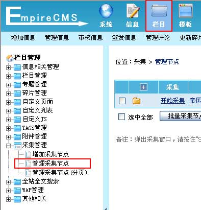
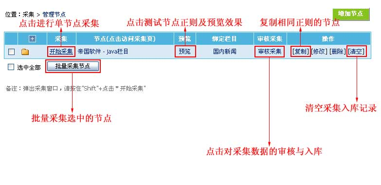
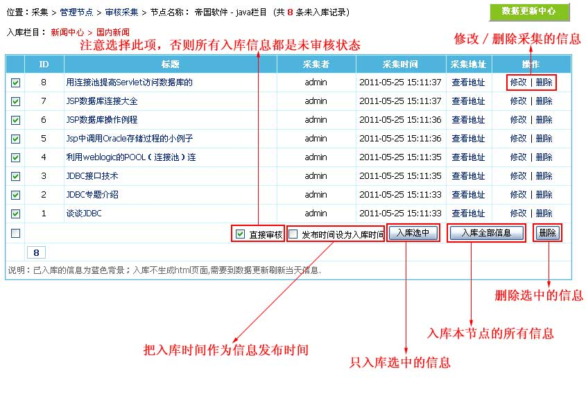
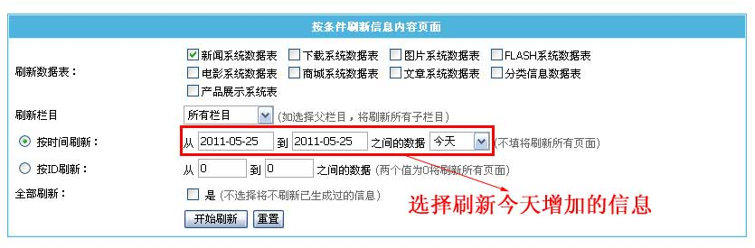

管理采集节点
选择本节内容
> 管理采集节点
> 采集数据入库
> 生成采集入库后的信息页面
管理采集节点
1、登录后台，单击“
栏目
”菜单，选择“
管理采集节点
”子菜单，进入管理采集节点界面：

2、进入
管理采集节点
界面，如下图：

[开始采集]
点击开始采集可对某一节点进行采集操作。
[预览]
节点
增加采集节点后，要先预览采集正则是否正确，确认无误后方可进行采集操作。
[审核采集]
对已经采集数据的审核，并将数据入库到栏目里。
[复制]
节点
方便增加相同正则的节点。
[清空]
节点
清空采集入库记录，使此节点数据可重复采集。
[批量采集节点]
点击对选中的多个节点进行采集操作。
采集数据入库
1、从上面的“
管理采集节点
”点击“
审核采集
”进入如下界面：

[直接审核]
正常情况选择直接审核，如果不选择：所有信息将都是未审核状态，需要手动审核信息。
[入库选中]
可以只入库选中的信息。
[入库全部信息
]
将本节点采集的信息一次性全部入库到栏目。
[发布时间设为入库时间]
把入库时间作为信息发布时间。可以批量采集信息，然后每天只入库一些信息。
生成采集入库后的信息页面
入库后的信息不会直接生成html页面，需要到数据更新中心生成当天的信息页面。
“系统”>“数据更新中心”>“[按条件刷新内容页]”：
